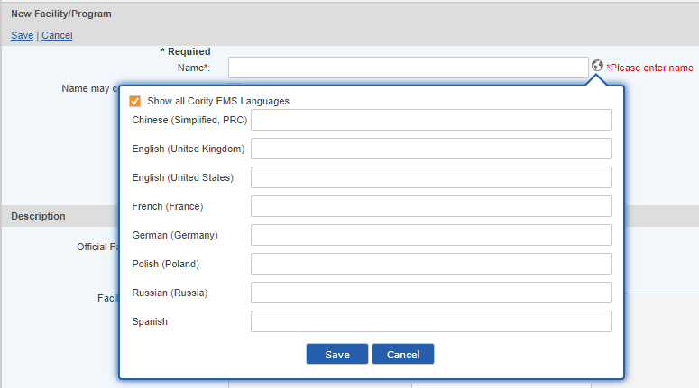
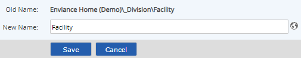
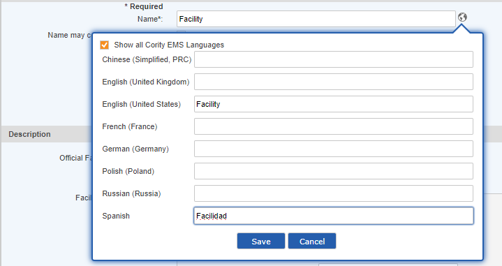

Localization is available for the following languages:
Spanish
Spanish refers to all available Spanish locales: Mexico, Chile, Costa Rica, El Salvador, Guatemala, Honduras, Nicaragua.
The Culture selected in the user profile determines the appropriate interface and language shown to users. Included in the localized interface are all standard user interface components (standard text, buttons, links, etc.) as well as such items as date formats, calendars and numeric formats appropriate to the culture. See User Profile for more information.
Custom localization can be done for system-specific components, so that system model objects and custom field values will also be presented in the appropriate language.
The following components of the system allow for custom localization in the supported languages.
By default, the languages presented for translation are all the active Culture values chosen by users. For example, if the system has users who have selected English and Chinese for their cultures, those languages will be presented by default for translation when choosing to enter localized values for any item. An option is available to "Show All Cority EMS Languages" if the user wishes to provide values for other available languages that are not currently active selections.
When presenting localized values to users in the system, the following rules apply:
Example:
POI Name default value: Gasoline Engine
Localized values:
Chinese (Simplified, PRC): (none)
English (United States): (none)
English (United Kingdom): Petrol Engine
Russian (Russia): (none)
Spanish: (none)
If the user's culture is English (United Kingdom), they will see "Petrol Engine". Otherwise, they will see the default value "Gasoline Engine".
While creating or editing the system model objects and requirements you can add multiple language versions for any of the fields that allow localization. Fields that may be localized display the language symbol  next to the field when editing fields.
next to the field when editing fields.
In view mode, the icon is shown only if there are current values. You can click the icon to see assigned values.
To provide localized values for objects:
Click the language symbol  next to the field.
next to the field.
In the pop-up dialog the active languages selected for all users in the system are shown.
Click Show All Cority EMS Languages if you want to add localized values for languages not shown.
Enter the value to use for each language for which you want to provide a localized version. 
Click Save.
To add localized object name values for an existing object, use the Rename function (on the right-click context menu).
Select the language symbol  .
.

In the pop-up dialog the active languages selected for all users in the system are shown. Check "Show All Cority EMS Languages" if you want to add localized values for languages not shown.
Enter the value to use for each language for which you want to provide a localized name.
